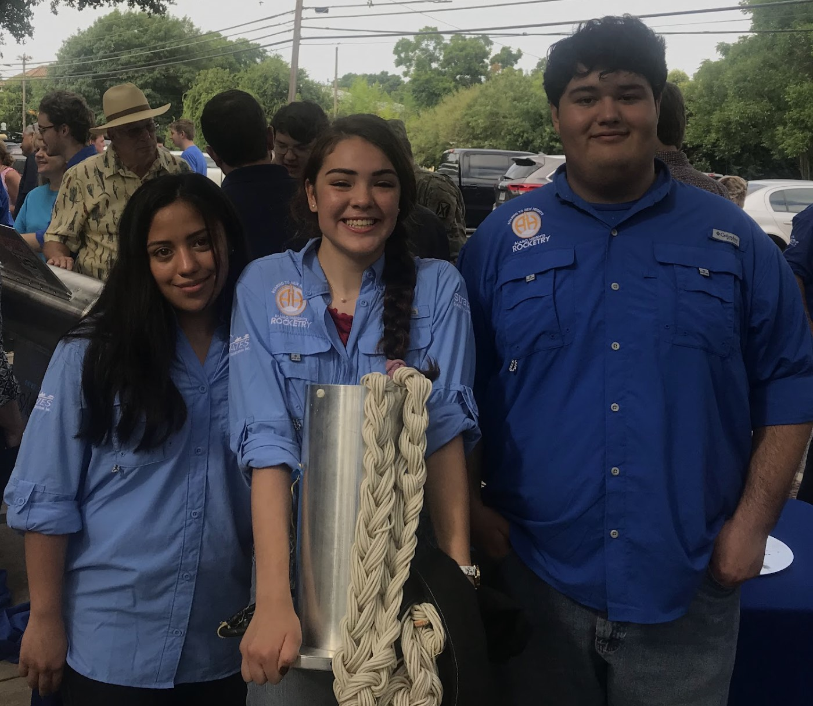

Early exploration of the world of Design Engineering.
On this page, we can dive into my early exploration into the world of Design Engineering. Most of these projects primarily stem from several design competitions I had the opportunity to work on throughout my time at Rice University. I will continue to update this blog with my newest projects as I return to Rice Spring of 2024.
1st Place Pediatric Track, 2nd Place Overall
My most recent project at Rice came from a Rice Design-a-thon. For this Design competition, we aimed to safely and effectively incentivize children to properly practice hand hygiene at school and to prevent the spread of COVID-19 in underprivileged communities. We did this by designing, prototyping and testing an interactive soap dispenser attachment that would play a little tune timed out to the recommended CDC guidelines. Then the attachment would dispense a sticker that the student could then stick on a poster to indicate proper hand-washing etiquette was met.
For this project we started off with very low fidelity prototypes as a proof of concept, which we then presented to a panel of elementary and preschool teachers to receive feedback and recommendations.
We then moved onto creating a functional prototype by designing the attachment on Solidworks CAD (Pictured on the Left) and 3D printing the mechanical components of the dispenser (Pictured on the Right).
We presented our progress to a panel of judges and my team placed 1st Place in the Pediatric Design Track and 2nd Place overall.
SOLIDWORKS CAD, Basic Arduino Integration, 3D printing PLA, User Testing
1st Place Overall
The WinDose project came from a Global Health Technologies Design-a-thon. For this Design competition, we needed to create a low-cost solution for accurate insulin dosage for people who are visually impaired.
For this design, we landed a final two part design of a WinDose clip on and magnetic plunger. Reference the diagram for the assembly (Pictured on the left). The user would simply need to select a WinDose clip based on the correct dosage. They could identify the correct clip by braille on the surface of each clip. Pushing the clip onto the base of the syringe, they would snap the clip onto the circumference of the syringe and insert the plunger. The plunger has been modified to include a magnet near the tip of the plunger that interfaces with a magnet on the clip. This way, the user can pull the plunger up until the tip of the plunger interacts with the magnet on the WinDose clip and receive tactile feedback on the correct dosage.
I created the CAD for this design in order to better understand the concept and then we created a rough, functional prototype (Pictured on the right).
We presented our design to a panel of Global Health Technologies experts and my team placed 1st overall.
SOLIDWORKS CAD, Rapid Prototyping Tools, Cost efficient Design
The inspiration2 project was my first long-term (and favorite) project coming into Rice University. For this project, I partnered with a pediatric anesthesiologist from MD Anderson to create a tool that would reduce pediatric preoperative anxiety when needing to use a gas mask.
For this design, we landed a final design of a pinwheel toy gas mask attachment that would incentivize young children to inhale and exhale through the gas mask (Pictured on the left). We would introduce the toy to the child before entering the OR, to allow them to familiarize themselves with the toy and the pediatric anesthesiologist before undergoing a procedure. This toy would operate like an airtight pinwheel, spinning as air passes through the tube, relying on the interaction of magnets inside and outside of the tube to spin.
For this project I taught myself CAD to create the mechanical components of the prototype and 3D printed all the pieces (Pictured on the right). From this we were able to assemble several functional, medium fidelity prototypes and have them evaluated by our target audience, children ages 2-5, to see if they would be drawn to the toy. From the testing, we noted the children were very engaged with the toy but we wished to make the ease of rotation of the blades not be dependent on the force of the air coming through the gas mask. To solve this we could implement sensors that are able to detect changes in air pressure within the tube to trigger the pinwheels to spin.
We presented the project and progress to our partners at MD Anderson and had them take inspiration from our prototypes and learnings to create a final and similar device.
SOLIDWORKS CAD, 3D Printing PLA, Rapid Prototyping
Oberth Level Platinum Award
This was the first Engineering Project I have ever worked on, and the primary reason I chose to go into engineering instead of medicine. For two years I worked on the recovery system design for two different rockets that were designed and constructed from scratch. On both rockets I lead the recovery teams as the recovery component manager (Pictured on the right).
Our first Rocket had a carbon fiber frame and fiber glass nose cone and around 6ft tall. This hybrid fuled rocket reached a max velocity of Mach 1.07 and was successfully recovered with a classic dual stage, two parachute recovery system.
Our second rocket was a 600lb, 37ft, aluminum body hybrid propellant rocket that we launched in White Sands (Pictured on the left). For this rocket, I wanted to save ~20lbs of weight by creating a dual stage, single parachute recovery system inspired by an old german article I found on parachutes. This system was tested successfully on ground. However, the actual rocket only reached a max altitude of ~100 feet.
CAD Drawings, Aluminum Metal Machining (CNC, Drill Press, Lathe)